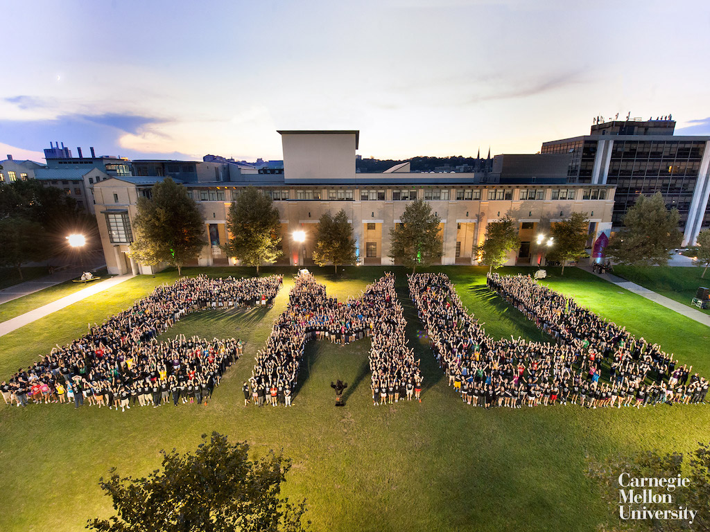

I work as an applied scientist in AmazonGo. Before this, I was a master student in Computer Vision program at CMU. My research interests mainly include machine learning, computer vision, deep learning and related topics. I have four publications and several research experiences as you can find in my RESUME. Feel free to CONTACT me
Hope everything goes well with you. Cheers!
Education
Learn and Inspire

Carnegie Mellon University
Master of Science in Computer Vision (MS, Robotics Institute, School of Computer Science, 2018-2019)
University of Science and Technology Beijing
Double Major in Internet of Things and Financial Engineering (BS, 2014-2018)
In order to drive safely, autonomous vehicles need to estimate the slope of the terrain on which the vehicle intends to drive. This is necessary to determine which parts of the terrain are drivable and to avoid obstacles. Thus, estimating the slope and drivability of the terrain is crucial for safe autonomous driving. Our solution is to use deep slope estimation with formal verification. We will train a neural network to quickly estimate the slope at all points of a large terrain. We will then compress the model to make it analyzable for formal verification methods. This combination of deep learning with formal verification will allow our method to be both fast and provably accurate.
In recent years, the trade-off between accuracy and speed in detection has been widely researched. As many single-stage detectors have achieved remarkable performance on both sides, the performance of CPU real-time detectors is still far from satisfaction. In this project, we design a CPU real-time detector based on SSD baseline. First, we train a teacher network which has high accuracy based on SSD and FPN. Then we do model compression using knowledge distillation with MobileNet+SSD as student network which is much faster while maintaining the accuracy. Experiment results demonstrate that our proposed methods could increase detection results of the tiny student network especially on hard classes like tiny or occluded objects.
Code: https://github.com/IssacCyj
Category: Computer Vision, Model Compression
Adversarial Occlusion-aware Face Detection
China Academy of Science, Institute of Automation
Occluded face detection is a challenging detection task due to the large appearance variations incurred by various real-world occlusions. This paper introduces an Adversarial Occlusion-aware Face Detector (AOFD) by simultaneously detecting occluded faces and segmenting occluded areas. Specifically, we employ an adversarial training strategy to generate occlusion-like face features that are difficult for a face detector to recognize. Occlusion is predicted simultaneously while detecting occluded faces and the occluded area is utilized as an auxiliary instead of being regarded as a hindrance. Moreover, the supervisory signals from the segmentation branch will reversely affect the features, helping extract more informative features. Consequently, AOFD is able to find the faces with few exposed facial landmarks with very high confidences and keeps high detection accuracy even for masked faces. Extensive experiments demonstrate that AOFD not only significantly outperforms state-of-the-art methods on the MAFA occluded face detection dataset, but also achieves competitive detection accuracy on benchmark dataset for general face detection such as FDDB.
Deep Convolutional Neural Networks (CNNs) are capable of learning unprecedentedly effective features from images. Some researchers have struggled to enhance the parameters' efficiency using grouped convolution. However, the relation between the optimal number of convolutional groups and the recognition performance remains an open problem. In this paper, we propose a series of Basic Units (BUs) and a two-level merging strategy to construct deep CNNs, referred to as a joint Grouped Merging Net (GM-Net), which can produce joint grouped and reused deep features while maintaining the feature discriminability for classification tasks. Our GM-Net architectures with the proposed BU\_A (dense connection) and BU\_B (straight mapping) lead to significant reduction in the number of network parameters and obtain performance improvement in image classification tasks. Extensive experiments are conducted to validate the superior performance of the GM-Net than the state-of-the-arts on the benchmark datasets, e.g., MNIST, CIFAR-10, CIFAR-100 and SVHN.
paper: hhttps://arxiv.org/abs/1706.06792
Code: https://github.com/IssacCyj/GM-Net
Category: Model Compression, Deep Learning
Deep Lucas Kanade Detector
Carnegie Mellon University
Lucas Kanade algorithm is a classical object tracking method. It computes the current location of an object based on the previous templates. As it directly calculate the first order derivates on the original image level, this algorithm runs pretty fast. In this project, we convert detection problem into a template tracking problem. Specifically, each anchor lcation of the feature map should try to match the template, and we compute a current bounding box for each anchor. If the shifts and loss are less than a threshold, then it is regareded as a true prediction. Only a pretrained feature extractor is required for the whole pipeline and there is no training procedure, no regresion branch and no classifcation branch. The proposed method has two assumptions: 1. LK algorithm assumes minor shift of the object; 2. We only have one template for all the objects that belongs to a class which requires the intra class variance of the features extracted from the deep learning model to be very small.
Date: Fall 2018
Category: Deep Learning, Object Detection
The Nature Conservancy Fisheries Monitoring
Kaggle Compitition
The task of this competition is to develop algorithms to automatically detect and classify species of tunas, sharks and more that fishing boats catch, which will accelerate the video review process. Faster review and more reliable data will enable countries to reallocate human capital to management and enforcement activities which will have a positive impact on conservation and our planet. However, the difficaulty is that the quality of the collect images on the fish boat is very poor and the fish appears to be quite blurry in many scenes. We propose a foreground-background merging method which enlarges effective receptive field and classifcation information. The rank of our team is top 20% in the first round.
Date: August 2017
Category: Deep Learning
miRNA–EF interactions inference based on the random walk with restart
Reimplementation of the paper: miREFRWR: a novel disease-related microRNA- environmental factor interactions prediction method
Increasing evidence has indicated that microRNAs (miRNAs) can functionally interact with environmental factors (EFs) to affect and determine human diseases. Uncovering the potential associations between diseases and miRNA–EF interactions could benefit the understanding of the underlying disease mechanism at miRNA and EF levels, miRNA signatures identification, and drug repurposing. In this study, based on the assumption that similar miRNAs (EFs) tend to interact with similar EFs (miRNAs) in the context of a given disease and under the framework of random walk with restart (RWR), a novel method of miREFRWR was developed to uncover the hidden disease-related miRNA–EF interactions by implementing random walks on an miRNA similarity network and EF similarity network, respectively. miREFRWR was evaluated by leave-one-out cross-validation, which achieved an AUC of 0.9500. It has been demonstrated that miREFRWR can effectively identify potential interactions in all the test classes, even if these test samples only share either EFs or miRNAs with the training samples. Furthermore, many predictive results for acute promyelocytic leukemia and breast cancer (67 and 10 interactions out of the top 1% predictions, respectively) have been verified by independent experimental studies. It is anticipated that miREFRWR could be a useful and important biological resource for biomedical research.
Paper Link: https://www.ncbi.nlm.nih.gov/pubmed/26689259
Date: October 2017
Category: Biological Data Analysis
Tell Me Eye Smart Glasses
Wearable devices designed for the blind people.
This project is to convert the real world visual signal to sudio signal to help the plind people fell the surrounding better. We designed a smart glasses that is able to "tell" blind people what is going on around them. Specifically, we use raspberry zero W to process the real world data and transmitting the data to the server. After getting the description of the collected images (videos) with image caption models, the smart glass is able to tell the blind people about the surroundings around them.
Date: January 2017
Category: Deep learning, System Design
Human Health and Climate Change Relation Model
University of Science and Technology Beijing
Health of human beings is influenced by multi-factors, among which weather conditions, API and so on are the most salient ones. Therefore, it is a popular theme to explore the relation between human health and these factors. In this article, we first propose a cluster-analyzing method based on weather conditions, finding its inner relation with API. Furthermore, with correlation analysis and time series analysis, taking the consideration of weather conditions, API and the number of patients for specific diseases, we eventually arrive at some comprehensive conclusions. At the last part of our methods, we propose a L2-Least Square Method model to predict the approximate number of patients for specific diseases, gaining a high precision rate after cross validation.